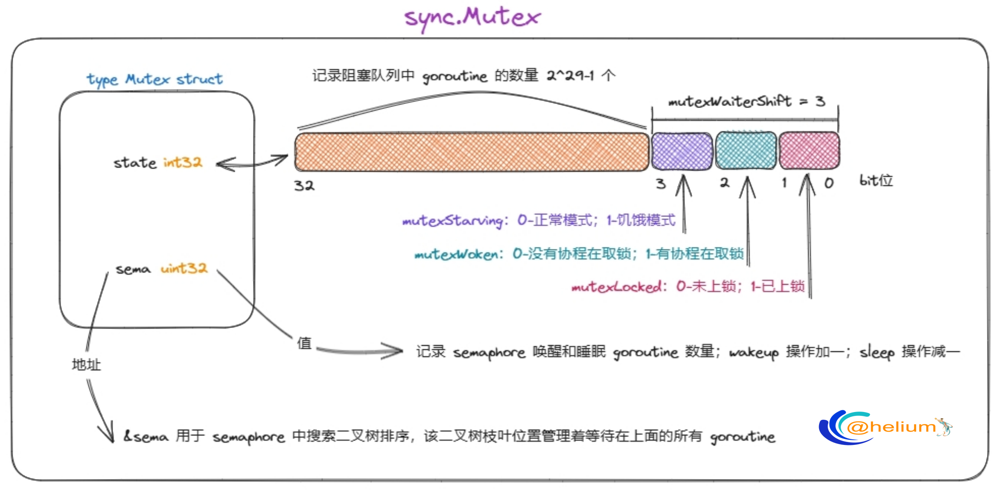

type Mutex struct 🚀#
包说明：
- sync 包提供了基本的同步原语，如互斥锁。
- 除了 Once 和 WaitGroup 类型之外，大多数都供底层库例程使用。
- 更高层次的同步最好通过 channels 和通信来完成。
- 包含在此包中定义的类型的值不应被复制。
1
2
3
4
5
6
7
|
// Package sync provides basic synchronization primitives such as mutual
// exclusion locks. Other than the Once and WaitGroup types, most are intended
// for use by low-level library routines. Higher-level synchronization is
// better done via channels and communication.
//
// Values containing the types defined in this package should not be copied.
package sync
|
- Mutex 是一把互斥锁。互斥锁的零值是未锁定的。
- Mutex 在第一次使用后不能被复制。
- 在 Go 内存模型的术语中，第 n 次调用 Unlock，第 m 次调用 Lock 在同步完成以前 任何 n < m。
- 成功调用 TryLock 等同于调用 Lock。调用 TryLock 失败根本不会建立任何关系 在同步完成以前。
- 它是一把结合了【自旋锁】和【信号量】优化过的锁。
1
2
3
4
5
6
7
8
9
10
11
12
13
14
15
16
17
18
|
// A Mutex is a mutual exclusion lock.
// The zero value for a Mutex is an unlocked mutex.
//
// A Mutex must not be copied after first use.
//
// In the terminology of the Go memory model,
// the n'th call to Unlock “synchronizes before” the m'th call to Lock
// for any n < m.
// A successful call to TryLock is equivalent to a call to Lock.
// A failed call to TryLock does not establish any “synchronizes before”
// relation at all.
type Mutex struct {
// Mutex 的状态信息
state int32 // 初始时为 0
// semaphore 相关字段，该字段也是为什么 Mutex 不让拷贝的原因
sema uint32 // 初始时为 0
}
|

Mutex 的内存布局：
- Mutex 是一个互斥锁，可以创建为其他结构体的字段，零值为解锁状态。
- Mutex 类型的锁和线程无关，可以由不同的线程加锁和解锁。
- Mutex 结构布局：
- state 记录 Mutex 的相关信息。
- sema 在 Mutex 中没有任何作用，主要是在 semaphore 中，该字段是 Mutex 不能被拷贝的根本原因，在 semaphore 中主要标识有 wakeup 发生。
【正常模式】和【饥饿模式】：
- 正常模式：一个尝试加锁的 goroutine 会先自旋几次，尝试通过原子操作获得锁，若几次自旋之后仍不能获得锁，则通过信号量（semaphore）排队等待。所有的等待者会按照先入先出（FIFO）的顺序排队，但是当一个等待者被唤醒后并不会直接拥有锁，而是需要和后来者（处于自旋阶段，尚未排队等待的协程）竞争。这种情况下后来者更有优势，一方面原因是后来者正在CPU上运行，自然比刚唤醒的 goroutine 更有优势，另一方面处于自旋状态的 goroutine 可以有很多，而被唤醒的 goroutine 每次只有一个，所以被唤醒的 goroutine 有很大概率获取不到锁，这种情况下它会被重新插入队列的头部，而不是尾部。当一个 goroutine 本次加锁等待的时间超过了 1ms 后，它会把当前 Mutex 切换至饥饿状态。
- 饥饿模式：Mutex 的所有权从执行 Unlock 的 goroutine 直接传递给等待队列头部的 goroutine。后来者不会自旋，也不会尝试获得锁，它们会直接从队列的尾部排队等待，即使 Mutex 处于 Unlocked 状态。当一个等待者获得了锁之后，它会在以下两种情况时将 Mutex 由饥饿模式切换回正常模式：(1)它是最后一个等待者，即等待队列空了。(2)它的等待时间小于1ms，也就是它刚来不久，后面自然更没有饥饿的 goroutine 了。
- 正常模式下 Mutex 有更好的性能，但是饥饿模式对于防止尾端延长（队列尾端的 goroutine 迟迟抢不到锁）来讲特别重要。
const#
1
2
3
4
5
6
7
8
9
10
11
12
13
14
15
16
17
18
19
20
21
22
23
24
25
26
27
28
29
|
const (
// 是否上锁标志位；0-未上锁，1-已上锁；
mutexLocked = 1 << iota // 001
// 是否有 goroutine 从阻塞中被唤醒；0-没有；1-有；
// 当该标志位被设置时，Unlock 操作不会唤醒排队的 goroutine。
mutexWoken // 010
// 是否处于饥饿模式；0-非饥饿，1-饥饿；
mutexStarving // 100
// 最低位存在3个bit位标识特俗信息，分别为上述的 mutexLocked、mutexWoken、mutexStarving
mutexWaiterShift = iota // 3
// 互斥公平
// 互斥量可以有两种操作模式:正常(normal)和饥饿(starvation)。
// 在正常模式(normal mode)下：等待的waiters按FIFO(先进先出)顺序排队，但被唤醒的waiter不拥有互斥锁，并与新到达的goroutines竞争所有权。
// 新加入的goroutines有一个优势，它们已经在CPU上运行，并且可能有很多，所以唤醒的waiters很有可能会失败。
// 在这种情况下，它被重新安排在等待队列的前面。如果waiter超过1ms未能获取互斥锁，它将互斥锁切换到饥饿模式。
// 在饥饿模式(starvation mode)下：互斥锁的所有权直接从正在解锁的goroutine移交给队列前面的waiter。
// 新到达的goroutines不会尝试获取互斥锁，即使它看起来已经解锁，也不会尝试旋转。相反，它们把自己排在等待队列的尾部。
// 如果一个waiter收到互斥锁的所有权，并且发现
// 1) 它是队列中最后一个waiter，或者
// 2) 它等待的时间少于1毫秒，它会将互斥锁切换回正常工作模式。
// 普通模式(Normal mode)具有更好的性能，因为goroutine可以连续多次获取互斥量，即使有阻塞的等待。
// 饥饿模式(Starvation mode)对于预防有些g一值获取不到锁的尾延迟具有重要意义。(该模式防止有些始终拿不到锁的一直等待在信号池里面的goroutine)
// 正常模式 <-> 饥饿模式 相互转换的时间阀门
// 饥饿模式，当前从semaphore中wakeup的goroutine的sleep时间超过1ms，再次获取锁失败时会被标记为饥饿模式
// 饥饿模式下：state 值的 mutexLocked和mutexWoken 位可能为0或1，被唤醒的goroutine mutexLocked和mutexWoken 位都为0
starvationThresholdNs = 1e6 // sync.Mutex 进入饥饿模式的等待时间阈值1ms。
)
|
Lock()#
- Lock 锁住 m。
- 如果锁已经被使用，调用 goroutine 会阻塞，直到 mutex 可用。
- Lock 和 Unlock 是一对操作。
- 该方法主要通过 atomic 函数实现了Fast path，相应的Slow path被单独放在了lockSlow()方法中。
- 根据源码注释的说法，这样是为了便于编译器对 Fast path 进行内联优化。
1
2
3
4
5
6
7
8
9
10
11
12
13
14
15
16
17
18
19
20
21
22
23
24
25
26
27
28
29
30
31
|
// Lock locks m.
// If the lock is already in use, the calling goroutine
// blocks until the mutex is available.
func (m *Mutex) Lock() {
// 1) 使用CAS尝试获取锁
// Fast path期望 Mutex 处于 Unlocked 状态，没有 goroutine 在排队，更不会饥饿。
// 理想状态下，一个CAS操作就可以获得锁。
// Fast path: grab unlocked mutex.
//
// 快速路径：获取解锁的互斥量。
// 原子操作比较 m.state 的旧值为 0 并交换成新值 1，成功则表示获取到锁。
// 这种情况发生在 state=0 时，没有等待的goroutine。
if atomic.CompareAndSwapInt32(&m.state, 0, mutexLocked) {
if race.Enabled {
race.Acquire(unsafe.Pointer(m))
}
return
}
// 2) m.state != 0 时都会走 Slow path
// CAS 操作没能获得锁，就需要进入 Slow path了。
// Slow path (outlined so that the fast path can be inlined)
//
// 如果上面快速方式拿取不到锁，则去和其他竞争。上面情况拿不到锁，可能：
// 1. 存在有其他goroutine正在持有锁。
// 2. 不存在其他goroutine持有锁，存在被唤醒的goroutine或还有等待的goroutine。
// 当前可能处于【正常模式】或【饥饿模式】
m.lockSlow()
}
|
lockSlow()#
- 如果调用者拿取不到锁，则下面操作流程是先自旋试图拿去锁，实在拿取不到锁则进入信号池去等待拿取锁。
1
2
3
4
5
6
7
8
9
10
11
12
13
14
15
16
17
18
19
20
21
22
23
24
25
26
27
28
29
30
31
32
33
34
35
36
37
38
39
40
41
42
43
44
45
46
47
48
49
50
51
52
53
54
55
56
57
58
59
60
61
62
63
64
65
66
67
68
69
70
71
72
73
74
75
76
77
78
79
80
81
82
83
84
85
86
87
88
89
90
91
92
93
94
95
96
97
98
99
100
101
102
103
104
105
106
107
108
109
110
111
112
113
114
115
116
117
118
119
120
121
122
123
124
125
126
127
128
129
130
131
132
133
134
135
136
137
138
139
140
141
142
143
144
145
146
147
148
149
150
151
152
153
154
155
156
157
158
159
160
161
162
163
164
165
166
167
168
169
170
171
172
173
174
175
176
177
178
179
180
181
182
183
184
185
186
187
188
189
190
191
192
193
194
195
196
197
198
199
200
201
202
203
204
205
206
207
208
209
210
211
212
213
214
215
216
217
218
219
220
221
222
223
224
225
226
227
228
229
230
231
232
233
234
235
|
// 竞争获取锁
// 1. 先自旋等待其他goroutine解锁（满足自旋条件时）
// 2. 尝试修改 state 值竞争锁
// 3. 竞争成功，获取锁退出
// 4. 竞争失败，sleep goroutine
func (m *Mutex) lockSlow() {
// 1. 当前goroutine首次进入semaphore池sleep的时间/纳秒，下次wakeup后用于判断 正常模式 <-> 饥饿模式 转换
// 2. queueLifo := waitStartTime != 0; 进入 semaphore 池的首或尾，false.尾 true.首
var waitStartTime int64
// mutex模式 【false.正常模式】 【true.饥饿模式】
// 1. 正常模式下，新来获取锁的goroutine如果满足条件会进行自旋等待锁被释放，如果还拿取不到锁则去信号池最前面等待。
// 2. 饥饿模式下，新来获取锁的goroutine不会进行自旋，直接去信号池的末尾去等待。
starving := false
// 是否有goroutine被唤醒 false.没有
// 有被唤醒的goroutine时，会试图去拿去锁，可能是跟当前正在获取锁的goroutine竞争
// 1. 在自旋情况下满足条件设置 awoke 为 true
// 2. 非饥饿模式下被唤醒的goroutine awoke 会被设置为 true
// 3. 在饥饿模式下 awoke 变量没有用
awoke := false // 用于原子设置 mutexWoken 位，通知 Unlock 函数有 woken 的goroutine了，不要去wakeup goroutine
// 记录旋转的次数，当没有获取锁时，会尝试4次去自旋获取
iter := 0 // 自旋计数器
// 以下代码都是从 old -> new 的原子操作，去尝试修改 state 值
old := m.state // 旧值state
// 该循环只有在获取到锁的时候才会退出，因此所有未获取到锁的goroutine都将在这里等待获取锁
for {
// 1) 饥饿模式下不要自旋，因为所有权按照顺序传递，自旋没有意义。
// 正常模式下锁没有被释放满足自旋条件需要自旋。
// Don't spin in starvation mode, ownership is handed off to waiters
// so we won't be able to acquire the mutex anyway.
//
// 不要在饥饿模式下旋转，所有权已移交给waiters，因此我们无论如何都无法获得互斥锁
// 1. old&(mutexLocked|mutexStarving) == mutexLocked; Mutex没有处于饥饿模式并且已被锁定。
// 2. runtime_canSpin(iter); 报告当前旋转要求条件。
// 主动旋转条件：
// 旋转次数小于4次 并且 多核CPU运行 并且除了当前P还有其他P正在运行（不是空闲或自旋状态的P）并且 当前P没有其他g了
// 这种情况需要去尝试自旋获取下锁，其他情况则不需要自旋去获取锁
// 以下自旋的意义，停留片刻等待其他goroutine让出锁，然后标记mutexWoken存在被唤醒的goroutine使自己获取锁优先级更高
if old&(mutexLocked|mutexStarving) == mutexLocked && runtime_canSpin(iter) { // 自旋在这里
// Active spinning makes sense.
// Try to set mutexWoken flag to inform Unlock
// to not wake other blocked goroutines.
//
// 主动旋转是有道理的。
// 尝试设置 mutexflag 来通知 Unlock 不要唤醒其他被阻塞在信号池的goroutines。
// 以下逻辑是处于自旋，自旋的意义在于标记有正在被唤醒的goroutine，其他线程不要再次唤醒导致过多goroutine被唤醒
//
// 1. !awoke; ：没有标记当前goroutine被唤醒
// 2. old&mutexWoken == 0; ：没有被唤醒的goroutine，包括其他g和当前g
// 3. old>>mutexWaiterShift != 0; ：存在等待排队在信号池的goroutine
// 4. atomic.CompareAndSwapInt32(&m.state, old, old|mutexWoken);
// 设置标志有goroutine被唤醒，这里设置成功那unlock则不会再去唤醒goroutine
if !awoke && old&mutexWoken == 0 && old>>mutexWaiterShift != 0 &&
atomic.CompareAndSwapInt32(&m.state, old, old|mutexWoken) {
// 标记为唤醒状态，主要是告诉unlock不要再去唤醒goroutine了，这里有自旋的在等待
awoke = true
}
// 短暂延迟一段时间，主要是等待其他g解锁
// 如果此时Unlock了第一个if则不会再判断为true，直接去争抢锁了
runtime_doSpin()
iter++
old = m.state // 从新赋值给old
continue
}
// 2) 锁可能已被释放尝试竞争获取，或锁还未解除去sleep。
// 代码执行到这里，只可能处于以下几种情况
// 1. 自旋次数以完，状态依然是 mutexLocked。
// 2. 状态是 mutexStarving 处于饥饿状态。
// 3. 状态是未加锁状态，锁已被解除。
// （处于饥饿模式） 或 （自旋次数超过4次） 或 （当前其他goroutine已Unlock）或 （不满足自旋条件）
// 如果锁已Unlock，那么尝试去获取锁；如果锁处于Lock，那么也尝试获取，否则加入到信号池中等待
// old 是本轮原子操作的 state 值
// new 是本轮需要争抢锁修改后的 state 值
// 正常模式下:
// 1. 在old未持有锁情况下，谁先原子操作从 old 修改为 new 谁就先获取到锁
// 2. 在old持有锁情况下，当前goroutine需要sleep
new := old
// 2.1) 正常模式下需要争抢锁，因此需要设置mutexLocked状态
// Don't try to acquire starving mutex, new arriving goroutines must queue.
//
// 不要尝试获取处于饥饿的Mutex，后来的goroutines必须排队。
//
// 处于饥饿模式下，为什么不需要设置mutexLocked标志呢？
// 1. 处于饥饿模式下锁的持有权是手把手交给后面等待的goroutine，因此mutexLocked标志设置不设置不重要
// 2. 对于新来的goroutine，mutexLocked位可能为0或1，但是当前goroutine不会去挣抢锁直接sleep，因此mutexLocked位不重要
// 3. 对于从sleep中wakeup的goroutine，一定是来自Unlock函数而来自该函数mutexLocked位一定是0，已被解锁
if old&mutexStarving == 0 { // 处于正常模式
// new表示新值修改的状态 mutexLocked需要锁，不管当前是Lock或Unlock当前都需要设置mutexLocked表示需要去争抢锁
new |= mutexLocked
}
// 2.2) 锁还未被释放 或 处于饥饿模式下 这两种情况下都会去sleep，因此需要加一。
// 如果old锁没释放 或 处于饥饿状态，那么当前的goroutine则是需要被加入到信号池里面去的
if old&(mutexLocked|mutexStarving) != 0 { // 处于Lock或则饥饿模式当前g需要加入到信号池
new += 1 << mutexWaiterShift // 数量增加1
}
// 2.3) 当前 goroutine 将 mutex 切换至饥饿模式
// 如果 mutex 已经处于 unlocked 状态，就不要切换了，
// 因为 Unlock() 函数认为处于饥饿模式的 mutex 等待队列不为空。
// The current goroutine switches mutex to starvation mode.
// But if the mutex is currently unlocked, don't do the switch.
// Unlock expects that starving mutex has waiters, which will not
// be true in this case.
//
// 当前的 goroutine 将互斥锁切换到饥饿模式，但如果互斥锁当前已解锁，就不要切换。
// Unlock期望处于饥饿状态的互斥锁有waiters，但在本例中并非如此。
//
// starving=true 发生在：这个goroutine被加入到信号池后再度被唤醒去争抢锁时，发现等待时间已经超过1ms时
// old&mutexLocked != 0，表示这个被唤醒的goroutine再次争抢锁时锁没被其他gorutine释放，这次再争抢将失败则会标记成饥饿模式
if starving && old&mutexLocked != 0 { // 这种情况下当前goroutine基本拿去不到锁
new |= mutexStarving // 标记成饥饿模式时，锁一定被其他持有；但是唤醒的g处于饥饿模式时，锁一定是Unlock状态
}
// 2.4) 当前goroutine是被唤醒的，检查并清除标志位
// awoke=true 表示来自自旋或被唤醒的goroutine两种形式
// 1. 自旋状态下 awoke=true，state 中 mutexWoken 位已被设置为 1
// 2. 被唤醒的goroutine下 awoke=true 在本函数的唤醒后被设置，而 state 中 mutexWoken 位在Unlock函数中被设置
// 因此 awoke=true 就一定存在 state 中 mutexWoken 位为1，new&mutexWoken != 0成立
if awoke { // awoke有等待的goroutine被唤醒
// The goroutine has been woken from sleep,
// so we need to reset the flag in either case.
//
// goroutine 已经从睡眠中唤醒，所以我们需要在任何一种情况下重置标志
if new&mutexWoken == 0 { // 不论来自自旋或被唤醒的goroutine这里都不能为0，正常状况下
throw("sync: inconsistent mutex state")
}
new &^= mutexWoken // 清除被唤醒标志位mutexWoken，因为下面即将去争抢锁，或者载入去信号池等待
}
// 尝试使用原子修改state，所有的goroutine都会通过该条件，但是一轮只能成功一个
// 这里修改m.state成功了，并不代表一定获取到了锁，也有可能是当前g需要加入到信号池中去
if atomic.CompareAndSwapInt32(&m.state, old, new) {
// 如果上一个拿去到锁的state是正常模式并没有锁，则这里直接退出，这里表示当前goroutine获取到了锁，正常模式都是从这里退出的
// 正常模式下获取到锁的情况，这里不会出现标记成饥饿模式但这里又判断为true退出了的情况，原因是标记成饥饿模式的前置条件是当前old是Lock
if old&(mutexLocked|mutexStarving) == 0 { // 谁先拿到锁退出，接到执行goroutine后面代码
break // locked the mutex with CAS
}
// 后面处理逻辑是之前有锁，这个goroutine需要去排队情况，或当前模式处于饥饿模式，直接把该goroutine加入到尾部
// If we were already waiting before, queue at the front of the queue.
//
// 如果我们之前已经在等待，请在队列的前面排队
// waitStartTime如果不等于0说明先前入队过有被唤醒过，正常第一次入队这里是false
// 被唤醒之后没有抢到锁，需要插入队列头部，而不是尾部。
queueLifo := waitStartTime != 0
// 首次进入信号池去等待时
if waitStartTime == 0 { // 这里表示这个goroutine从信号池中第一次被唤醒依然没有获取到锁，从新设置时间
waitStartTime = runtime_nanotime() // 注意：除第一次入队后后面每次缓存waitStartTime时间都不会被刷新
}
// 这里存在被唤醒但是还是没拿到锁的情况会再次被入队
// runtime_SemacquireMutex的queueLifo参数为true则是插入的信号池头部，false插入到尾部
// 首次进入信号池，则直接排在尾部
// 从信号池中出来又争抢失败进入信号池排在头部
// 如我们取出gorutine则是从头部开始往后取，这也就是我们说的先进先出
// 因为第一次加入信号池的都是插入到尾部，当再被唤醒依然没有获取到锁时，则是被放回到头部
// 当前goroutine去排队，这里当前groutine被调离工作线程等待抢到锁后继续后面执行
runtime_SemacquireMutex(&m.sema, queueLifo, 1)
// 被唤醒的g，接到从这里执行尝试去获取锁；可能当前处于饥饿模式或处于正常模式，唤醒g的相关代码位于Unlock函数
// 如果等待的时间大于1ms则标记成饥饿模式，以下逻辑是当前goroutine被唤醒后再次尝试获取锁
// 等待时间超过了1ms，等待时间太久需要被标记为饥饿状态
starving = starving || runtime_nanotime()-waitStartTime > starvationThresholdNs
old = m.state // 获取当前的状态
// 如果处于饥饿模式，处于饥饿模式下唤醒的goroutine立即获取锁，因为正常来抢的goroutine都会被入队，
// 然后一个个来获取
// 所有饥饿模式下获取锁的出口都在这里，该条件满足说明当前goroutine获取到锁持有权
if old&mutexStarving != 0 {
// If this goroutine was woken and mutex is in starvation mode,
// ownership was handed off to us but mutex is in somewhat
// inconsistent state: mutexLocked is not set and we are still
// accounted as waiter. Fix that.
//
// 当前代码位置的 goroutine 肯定是被唤醒的，而且 Mutex 处于饥饿模式
// 所有权被直接交给当前 goroutine
// 但是这种情况下 mutex 的 state 会与实际情况不一致
// mutexLocked 标志位没有设置
// 而且等待者计数中也没有减去当前 goroutine。需要修复 state
// 注意饥饿模式下传递 mutex 所有权不会设置 mutexWoken 标志，只有正常模式下唤醒才会
//
// 饥饿模式下 old>>mutexWaiterShift != 0，当前一定不能是最后一个，
// 因为下面 old>>mutexWaiterShift == 1 会退出饥饿模式
// old&(mutexLocked|mutexWoken) != 0 因为处于饥饿模式下，所有的goroutine都会去排队sleep，
// 被wakeup的goroutine一定来自Unlock函数，
// 此时mutexLocked一定解锁，mutexWoken一定是被清除的
if old&(mutexLocked|mutexWoken) != 0 || old>>mutexWaiterShift == 0 {
// 饥饿模式下，mutexLocked和mutexWoken必定为0，参看上面代码。
throw("sync: inconsistent mutex state")
}
// +mutexLocked -1<<mutexWaiterShift
delta := int32(mutexLocked - 1<<mutexWaiterShift) // 将等待的数量减一
// 等待时间小于1ms 或 当前goroutine是队列最后一个，则标记退出饥饿模式
if !starving || old>>mutexWaiterShift == 1 {
// Exit starvation mode.
// Critical to do it here and consider wait time.
// Starvation mode is so inefficient, that two goroutines
// can go lock-step infinitely once they switch mutex
// to starvation mode.
delta -= mutexStarving // 退出饥饿模式
}
atomic.AddInt32(&m.state, delta) // 修改state，返回直接返回，应为该goroutine 获取到锁了
break // 饥饿模式从这里退出，因此饥饿模式下被唤醒的goroutine直接从这里退出
}
// 正常模式下，设置为唤醒去争抢锁
awoke = true // state的mutexWoken位在Unlock函数中被设置
iter = 0 // 自旋次数重置
} else {
// 从old->new 原子设置，如果设置失败从新再来
old = m.state
}
}
if race.Enabled {
race.Acquire(unsafe.Pointer(m))
}
}
|
sync_runtime_canSpin()#
- sync.Mutex 主动旋转条件。
- 不主动旋转条件：
- 【旋转次数大于等于4次】或【单核CPU在运行】 或【除了当前P其他P都处于空闲或自旋状态】，不需要主动去旋转等待获取锁。
- 如果当前P的runq不为空，也没必要去自旋，因为里面的g还等着去执行，直接把当前g挂起。
- 主动旋转条件：
- 【旋转次数小于4次】并且【多核CPU运行】并且【除了当前P还有其他P正在运行】（不是空闲或自旋状态的P）并且 【当前P没有其他g了】。
- 这种情况需要去尝试自旋获取下锁，其他情况则不需要自旋去获取锁。
runtime/proc.go文件中。
1
2
3
4
5
6
7
8
9
10
11
12
13
14
15
16
17
18
19
20
21
22
23
24
25
26
27
28
29
30
31
32
33
34
|
// Active spinning for sync.Mutex.
//go:linkname sync_runtime_canSpin sync.runtime_canSpin
//go:nosplit
func sync_runtime_canSpin(i int) bool {
// sync.Mutex is cooperative, so we are conservative with spinning.
// Spin only few times and only if running on a multicore machine and
// GOMAXPROCS>1 and there is at least one other running P and local runq is empty.
// As opposed to runtime mutex we don't do passive spinning here,
// because there can be work on global runq or on other Ps.
//
// sync.Mutex是合作性的，所以我们对spinning是保守的。
// 只旋转几次，且仅当运行在多核计算机和GOMAXPROCS>1上，并且至少有一个其他运行P且本地runq为空时。
// 与运行时互斥锁相反，我们在这里不做被动旋转，因为可以在全局runq或其他P上进行工作。
//
// 以下条件满足一项都不会再次自旋去获取锁
// 1. const active_spin = 4; 最多尝试4次自旋获取
// 2. var ncpu int32 <= 1; 如果是单核CPU
// 3. gomaxprocs <= int32(sched.npidle+sched.nmspinning)+1;
// 3.1 gomaxprocs：表示总的P
// 3.2 sched.npidle空闲的P数量
// 3.3 sched.nmspinning正在自旋的M数量(这里面可能存在正在争抢锁，处在自旋都是只有一个g的情况)
// 除了当前P其他的P都很闲，也不必要自旋了。
if i >= active_spin || ncpu <= 1 || gomaxprocs <= int32(sched.npidle+sched.nmspinning)+1 {
return false
}
// 这里不像 runtime.mutex 那样进行消极自旋，因为全局 runq 或其他 P 上或许还有可运行的任务。
// 当前本地P不为空，也不需要自旋再出去尝试获取锁，其他goroutine还等起的。
if p := getg().m.p.ptr(); !runqempty(p) {
return false
}
return true
}
|
sync_runtime_doSpin()#
- 短暂的延迟。
runtime/proc.go 文件中。
1
2
3
4
5
6
|
//go:linkname sync_runtime_doSpin sync.runtime_doSpin
//go:nosplit
func sync_runtime_doSpin() {
// 循环30次等待
procyield(active_spin_cnt) // active_spin_cnt=30
}
|
procyield()#
- 短暂的延迟。
1
2
3
4
5
6
7
8
|
# runtime/asm_amd.64.s
TEXT runtime·procyield(SB),NOSPLIT,$0-0
MOVL cycles+0(FP), AX # AX=30 参数
again:
PAUSE # 自旋降低CPU发热和性能优化。
SUBL $1, AX # AX -= 1
JNZ again
RET
|
Unlock()#
- Unlock解锁m。
- 如果m在进入解锁时没有被锁定，则是一个运行时错误。
- 一个锁定的互斥量与一个特定的goroutine无关。
- 允许一个goroutine锁定一个互斥量，然后安排另一个goroutine解锁它。
- 该方法主要通过 atomic 函数实现了 Fast path，相应的 Slow path被单独放在了 unlockSlow() 方法中。
- 根据源码注释的说法，这样是为了便于编译器对 Fast path 进行内联优化。
1
2
3
4
5
6
7
8
9
10
11
12
13
14
15
16
17
18
19
20
21
22
23
24
25
26
27
28
29
30
31
32
33
34
35
36
37
38
39
|
// Unlock unlocks m.
// It is a run-time error if m is not locked on entry to Unlock.
//
// A locked Mutex is not associated with a particular goroutine.
// It is allowed for one goroutine to lock a Mutex and then
// arrange for another goroutine to unlock it.
func (m *Mutex) Unlock() {
if race.Enabled {
_ = m.state
race.Release(unsafe.Pointer(m))
}
// 1) 通过原子操作从 state 中减去 mutexLocked，也就是释放锁
// 然后根据 state 的新值(new)来判断是否需要执行 Slow path。
// Fast path: drop lock bit.
//
// Fast path: 直接把锁标志位放开
// 如果之前mutexLocked位为1则修改为0；如果之前mutexLocked位为0则修改为1；
new := atomic.AddInt32(&m.state, -mutexLocked) // 如果删除了锁的bit位，state等于0说明没有等待抢锁的goroutine直接返回
// new为0，意味着没有其他 goroutine 在排队，所以不需要执行额外操作。
// new不为0，则可能需要唤醒某个 goroutine。
// Unlock 执行完后mutex.state!=0 则存在以下可能
// 正常模式下
// 1. 当前存在等待的goroutine去唤醒它
// 2. 当前存在自旋等待的goroutine，则不唤醒其他等待的goroutine
// 饥饿模式下
// 1. 直接将锁交给等待队列的第一个goroutine
if new != 0 { // 还存在其他等待队列中的goroutine
// Outlined slow path to allow inlining the fast path.
// To hide unlockSlow during tracing we skip one extra frame when tracing GoUnblock.
//
// 概述了慢速路径以允许内联快速路径
// 为了在跟踪过程中隐藏 unlockSlow，我们在跟踪 GoUnblock 时会跳过一个额外的帧
m.unlockSlow(new)
}
}
|
unlockSlow()#
1
2
3
4
5
6
7
8
9
10
11
12
13
14
15
16
17
18
19
20
21
22
23
24
25
26
27
28
29
30
31
32
33
34
35
36
37
38
39
40
41
42
43
44
45
46
47
48
49
50
51
52
53
54
55
|
func (m *Mutex) unlockSlow(new int32) {
// 判断未加锁的情况下不能多次调用unlock
// 正常逻辑这里 new+mutexLocked 应该为1
if (new+mutexLocked)&mutexLocked == 0 { // 这种情况判断之前根本就没加过锁，则去解锁这会直接报错误
throw("sync: unlock of unlocked mutex")
}
// 正常模式下
if new&mutexStarving == 0 {
// 从 old -> new 原子操作，主要是唤醒goroutine
old := new
for { // 以下代码是通过唤醒goroutine和其他正在运行的goroutine去争抢锁
// If there are no waiters or a goroutine has already
// been woken or grabbed the lock, no need to wake anyone.
// In starvation mode ownership is directly handed off from unlocking
// goroutine to the next waiter. We are not part of this chain,
// since we did not observe mutexStarving when we unlocked the mutex above.
// So get off the way.
//
// 如果没有waiters，或goroutine已经被叫醒或抢了锁，没有必要叫醒任何人。
// 在饥饿模式下，所有权会从解锁goroutine直接移交给下一个waiter。
// 我们不是这个链的一部分，因为我们在上面解锁互斥锁时没有观察到mutexStarving。所以别挡道。
//
// 没有等待的goroutine 或 (有其他的goroutine已近获得锁 或 有被唤醒的goroutine 或 当前处于饥饿模式下)
if old>>mutexWaiterShift == 0 || old&(mutexLocked|mutexWoken|mutexStarving) != 0 {
return // 直接返回，不需要再去后续处理
}
// Grab the right to wake someone.
//
// 等在被唤醒的goroutine数量减一，设置有被唤醒标志
new = (old - 1<<mutexWaiterShift) | mutexWoken // 设置需要唤醒一个goroutine的新状态
if atomic.CompareAndSwapInt32(&m.state, old, new) { // 原子设置成功，说明没有其他正在争抢或当前争抢成功
runtime_Semrelease(&m.sema, false, 1) // 取出等待的goroutine放入本地P等待被调度，饭后返回
return
}
old = m.state // 没有获取成功，则直接替换旧state，再次尝试
}
} else { // 饥饿模式下
// Starving mode: handoff mutex ownership to the next waiter, and yield
// our time slice so that the next waiter can start to run immediately.
// Note: mutexLocked is not set, the waiter will set it after wakeup.
// But mutex is still considered locked if mutexStarving is set,
// so new coming goroutines won't acquire it.
//
// 饥饿模式：将mutex所有权移交给下一个waiter，并让出我们的时间片，以便下一个waiter可以立即开始运行
// 注意：mutexLocked 没有设置，waiter会在唤醒后设置
// 但是如果设置了 mutexStarving，mutex 仍然被认为是锁定的，所以新的 goroutines 不会获取它
// 处于饥饿模式下从这里唤醒的goroutine，state中mutexLocked位，一定为0
runtime_Semrelease(&m.sema, true, 1) // 饥饿模式下只从首部取出goroutine等待被调度即可
// 这里在饥饿模式下为甚不判断等待的goroutine数量？
// 原因是：处于饥饿模式下等待的goroutine数量一定是>=1的。
// 因为最后一个goroutine会把模式切换成正常模式，相关代码位于Lock函数
}
}
|
TryLock()#
- TryLock试图锁定m并报告是否成功。
- 请注意，虽然确实存在正确使用TryLock的情况，但很少，而且TryLock的使用通常表明互斥量的特定使用中存在更深层的问题。
- TryLock 可以用于在业务比较繁忙时去尝试获取锁，失败则提示相关文案等
1
2
3
4
5
6
7
8
9
10
11
12
13
14
15
16
17
18
19
20
21
22
23
24
25
26
27
28
|
// TryLock tries to lock m and reports whether it succeeded.
//
// Note that while correct uses of TryLock do exist, they are rare,
// and use of TryLock is often a sign of a deeper problem
// in a particular use of mutexes.
func (m *Mutex) TryLock() bool {
old := m.state
// 当前锁存在 或 当前处于饥饿模式
if old&(mutexLocked|mutexStarving) != 0 {
return false // 获取失败
}
// There may be a goroutine waiting for the mutex, but we are
// running now and can try to grab the mutex before that
// goroutine wakes up.
//
// 可能有一个goroutine在等待互斥量，但我们现在正在运行，并且可以尝试在goroutine唤醒之前获取互斥量。
//
// 尝试去争抢锁，这里的old一定是没加锁并处于正常模式下去尝试争抢
if !atomic.CompareAndSwapInt32(&m.state, old, old|mutexLocked) {
return false // 争抢失败情况
}
if race.Enabled {
race.Acquire(unsafe.Pointer(m))
}
return true // 争抢成功
}
|
type Locker interface#
- Locker接口代表一个可以加锁和解锁的对象
1
2
3
4
5
|
// A Locker represents an object that can be locked and unlocked.
type Locker interface {
Lock()
Unlock()
}
|
使用示例#
sync.Mutex#
- 互斥锁：是传统的并发程序对共享资源进行访问控制的主要手段，
Go语言中推荐使用通道(channel)来实现资源共享和通信
- 互斥锁：由标准库 sync 包中分的 Mutex 结构体类型实现
- 只有两个公开方法：
- Lock() ：获得锁
- Unlock() ：释放锁
- 同一个协程中同步调用使用Lock()加锁后，不能再对其加锁，否则会引发运行时异常，只能在 Unlock() 之后再次 Lock()
- 多个协程中异步调用Lock()没有问题，但每个协程只能调用一次Lock()，由于多个协程之间产生了锁竞争，因此不会有运行时异常
- 互斥锁：适用于只允许有一个读或者写的场景，所以该锁也叫全局锁
- 如果在使用 Unlock() 前未加锁，就会引起一个运行错误，已经锁定的 Mutex 并不与特定的协程相关，这样可以利用一个协程对其加锁，在利用其它协程对其解锁
1
2
3
4
5
6
7
8
9
10
11
12
13
14
15
16
17
18
19
20
21
22
23
24
25
26
27
28
29
30
31
32
33
34
35
36
37
38
39
40
41
42
43
44
45
46
47
48
49
50
51
52
53
54
55
56
57
58
|
// LockA() 中有 Lock()
// LockB() 中也有 Lock()
// LockB() 的 Lock() 运行时，锁还没有 Unlock()，程序发生 panic
// 这是在同步调用互斥锁中常见的问题，一般在一对互斥锁中间不要调用其它函数，即使要用也尽量采用异步方式
package main
import (
"fmt"
"sync"
"time"
)
var mutex sync.Mutex
func main() {
LockA()
time.Sleep(10)
}
func LockA() {
mutex.Lock() // 加锁
fmt.Println("Lock in A")
LockB()
time.Sleep(5)
fmt.Println("Wake up in A")
mutex.Unlock() // 解锁
fmt.Println("Unlock in A")
}
func LockB() {
fmt.Println("B")
mutex.Lock() // 加锁 main goroutine在这里被阻塞，导致deadlock
fmt.Println("Lock in B")
mutex.Unlock() // 解锁
fmt.Println("Unlock in B")
}
/*
Lock in A
B
fatal error: all goroutines are asleep - deadlock!
goroutine 1 [semacquire]:
sync.runtime_SemacquireMutex(0x593b24, 0x0, 0x1)
D:/True-False/Go/src/runtime/sema.go:71 +0x4e
sync.(*Mutex).lockSlow(0x593b20)
D:/True-False/Go/src/sync/mutex.go:138 +0x103
sync.(*Mutex).Lock(...)
D:/True-False/Go/src/sync/mutex.go:81
main.LockB()
D:/True-False/WWW/GoLang/src/xuexi/mutex.go:28 +0x194
main.LockA()
D:/True-False/WWW/GoLang/src/xuexi/mutex.go:19 +0xa2
main.main()
D:/True-False/WWW/GoLang/src/xuexi/mutex.go:12 +0x29
exit status 2
*/
|
- 把上面同步改为异步，把LockA()的LockB()改为go LockB()
1
2
3
4
5
6
7
8
9
10
11
12
13
14
15
16
17
18
19
20
21
22
23
24
25
26
27
28
29
30
31
32
33
34
35
36
37
38
39
40
41
|
package main
import (
"fmt"
"sync"
"time"
)
var mutex sync.Mutex
func main() {
LockA()
time.Sleep(10)
}
func LockA() {
mutex.Lock() // 加锁
fmt.Println("Lock in A")
go LockB()
time.Sleep(5)
fmt.Println("Wake up in A")
mutex.Unlock() // 解锁
fmt.Println("Unlock in A")
}
func LockB() {
fmt.Println("B")
mutex.Lock() // 加锁 lockB goroutine等待LockA解锁，先自旋再是被挂起
fmt.Println("Lock in B")
mutex.Unlock() // 解锁
fmt.Println("Unlock in B")
}
/*
Lock in A
B
Wake up in A
Unlock in A
Lock in B
Unlock in B
*/
|
- 建议：同一个互斥锁的成对锁定和解锁操作可以放在同一层次的代码块中
- 经典用法如下：
1
2
3
4
5
6
7
8
|
var lck sync.Mutex
func foo() {
lck.Lock() // 加锁
defer lck.Unlock() // 解锁
// ... ...
}
// lck.Lock() 会阻塞直到获取锁，然后利用defer语句在函数返回时自动释放锁
|
- 示例代码，通过三个协程来体现sync.Mutex对资源的访问控制特征
1
2
3
4
5
6
7
8
9
10
11
12
13
14
15
16
17
18
19
20
21
22
23
24
25
26
27
28
29
30
31
32
33
34
35
36
37
38
|
package main
import (
"fmt"
"sync"
"time"
)
func main() {
//var wg sync.WaitGroup
wg := sync.WaitGroup{}
var mutex sync.Mutex
fmt.Println("Locking (G0)")
mutex.Lock() // 加锁
fmt.Println("locked (G0)")
wg.Add(3)
for i := 1; i < 4; i++ {
go func(i int) {
fmt.Printf("Locking (G%d)\n", i)
mutex.Lock() // 加锁
fmt.Printf("Locked (G%d)\n", i)
time.Sleep(time.Second * 2) // 延迟2s
mutex.Unlock() // 解锁
fmt.Printf("unlocked (G%d)\n", i)
wg.Done()
}(i)
}
time.Sleep(time.Second * 5)
fmt.Println("ready unlock (G0)")
mutex.Unlock() // 解锁
fmt.Printf("unlocked (G0)")
wg.Wait()
}
|
// 程序运行结果可以看出，当有锁释放时，才能进行加锁动作
// 运行结果如下
Locking (G0)
locked (G0)
Locking (G1)
Locking (G2)
Locking (G3)
ready unlock (G0)
unlocked (G0)Locked (G1)
unlocked (G1)
Locked (G2)
unlocked (G2)
Locked (G3)
unlocked (G3)
- Mutex 也可以作为结构体的一部分，这样结构体在被多线程处理时数据安全才有保障
1
2
3
4
5
6
7
8
9
10
11
12
13
14
15
16
17
18
19
20
21
22
23
24
25
26
27
28
29
30
31
32
33
34
35
36
37
38
39
40
|
package main
import (
"fmt"
"sync"
"time"
)
type Book struct {
BookName string
L *sync.Mutex
}
func (bk *Book) SetName(wg *sync.WaitGroup, name string) {
defer func() {
fmt.Println("Unlock set name:", name)
bk.L.Unlock() // 解锁
wg.Done()
}()
bk.L.Lock() // 加锁
fmt.Println("Lock set name:", name)
time.Sleep(1 * time.Second)
bk.BookName = name
}
func main() {
bk := Book{}
//bk.L = &sync.Mutex{}
bk.L = new(sync.Mutex)
//wg := new(sync.WaitGroup)
wg := &sync.WaitGroup{}
books := []string{"<<三国演义>>", "<<道德经>>", "<<西游记>>"}
for _, book := range books {
wg.Add(1)
go bk.SetName(wg, book)
}
wg.Wait()
}
|
Lock set name: <<西游记>>
Unlock set name: <<西游记>>
Lock set name: <<三国演义>>
Unlock set name: <<三国演义>>
Lock set name: <<道德经>>
Unlock set name: <<道德经>>
1
2
3
4
5
6
7
8
9
10
11
12
13
14
15
16
17
18
19
20
21
22
23
24
25
26
27
28
29
30
31
32
|
package main
import (
"fmt"
"sync"
"time"
)
func main() {
var m sync.Mutex
go func() {
m.Lock()
defer m.Unlock()
fmt.Println("1")
m.Lock() // 这里当前goroutine将被永久保存到信号池中得不到运行机会
fmt.Println("2")
defer m.Unlock()
fmt.Println("3")
}()
time.Sleep(5 * time.Second)
// Output:
// 1
}
|
注意事项#
- Lock() 和 UnLock() 方法应该成对出现。
- sync.Mutex 不允许被值拷贝，拷贝地址可以。